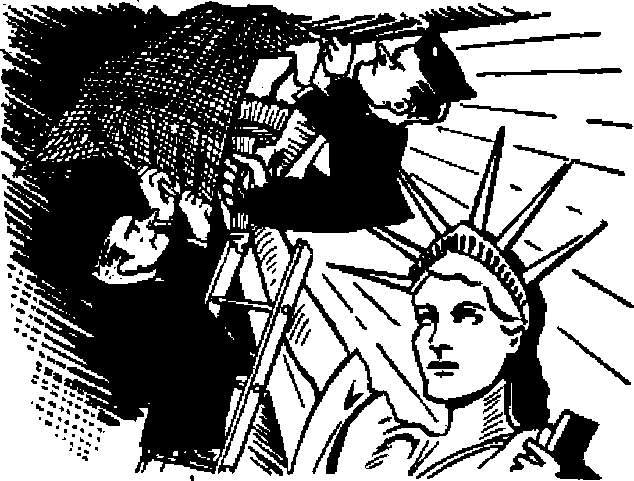

Some results of the Truman-Pius letters
America’s Lost Week-End
The American Legion’s annual convention-carousal
Franco’s Paradise
How the Law of Succession appears to Spaniards
Do High Schools and Colleges Provide Essential Training?
THE MISSION OF THIS JOURNAL
News sources that are able to keep you a wake io the vital Issues of our times must he unfettered by censorship and selfish interests, “Awake!” has no fetters. It recognizes facts, faces facts, is free to publish facts. It Is not bound by political ambitions or obligations; it is unhampered by advertisers whose toes must not be trodden on; it is unprejudiced by traditional creeds. This journal keeps itself free that it may speak freely to you. But It does not abuse its freedom. It maintains integrity to truth.
"Awake I” uses the regular news channels, but is not dependent on them. Its own correspondents are ori all continents, in scores of nations. From the four comers of the earth their uncensored, on-the* scenes reports come to you through these columns. This journal’s viewpoint is not narrow, but is international. It is read in many nations, in many languages, by persons of all ages. Through its pages many fields of knowledge pass in review—government, commerce, religion, history, geography, science, social conditions, natural wonders—why, its coverage is as broad as the earth and as high as the heavens.
“Awake I” pledges itself to righteous principles, to exposing hidden foes and subtle dangers, to championing freedom for all, to comforting mourners and strengthening those disheartened by the failures of a delinquent world, reflecting sure hope for the establishment of a righteous New World.
Get acquainted with “Awake!” Keep awake by reading “Awake!”
Published Semimonthly By WATCHTOWER BIBLE AND TRACT SOCIETY, INC.
117 Adams Street Brooklyn 1, N. Y., U. S. A.
N. H. Knoeb, President Graham Swift, Secretary
Five cents a copy One dollar a year
RaalttMM should be sent to sent to ensure entry into country la ccmpllanw with regulations to guaranteed full delivery at lower Remittances are accepted at Brooklyn from etrantriea where do critee fe lasted, by international money order only, SubacdpUan rites to different countries are hen stated to local currency.
Nriie* 9t npfrstlQi (with rami blank) Is emit at feast two ism before suhsolptfen eijilnu.
Change of address when sent to our office miy be expected effective within one moDto, Sand your old as well as new address,
Offices Yearly Subscription Rate
Canada, U.S., 117 Adams St., Brooklyn 1, N. I. $1 Australia 7 Beresford M, Strathfield, N J.W. 6a
Cmeda, 40 Irwin Are., Toronto 0, Ontario England Craven Terrace, London, W. 3 South Africa, 628 Boston House, Cape Town fis
Entered as second-class matter at Brooklyn, N. Y., Act of March 3, 1870. Printed to U.S.A.
CONTENTS
Do Truman and the Pope Labor in Vain? 3
“Champion Against Despotic Rule”
Searching Questions, and an Answer
Parting Glance
Do High Schools and Colleges
“Thy Word Is Truth”
Accurate Interpretation of Scripture
WC’XCEPT the Lord build the house, JCj they labour in vain that build it.” Those words of Psalm 127:1 President Truman quoted to Pope Pius XII in a letter written during August. The context of the letter showed that the “house” to be built was a “sound and lasting peace” and a “moral world order”. There is no question that this world in its quest for peace employs Truman and the pope as prominent builders, but to answer the blunt question posed by the title of this article and Truman’s quotation of the Bible Psalm it must be determined whether they are builders employed by God. This is open to question. The pious palaver they peddle and cause to be publicized is calculated to paint them as godly personages used by the Lord. Truman’s overtures to the pope have been anything but musical to many Protestants in the United States, and they strike the ears of many international poli-ticians as noisy d i s-cord. Hence it is seen as
labor that not only sows discord within the boundaries of the United States, but also constitutes a political-religious coalition against Communism, which widens the gulf between East and West. Such divisive result questions the advisability of president and pontiff joining hands in peace efforts and invites consideration as to whether such religiouspolitical colaboring is in vain.
The August exchange of letters between President Truman and Pope Pius Xn was presaged by Truman’s dispatching Myron C. Taylor, his personal representative to the Vatican, for a series of discussions with the pontiff on “problems relative to the establishment of peace under a moral world order and to the alleviation of the human suffer-ing”. The president’s statement continued:
The purpose of these further conversations, as on earlier occasions, is to gather for my guidance and assistance various views and impressions concerning existing conditions affecting peace and the relief of distress, and to obtain the energetic co-operation of all men and women of good-will, whether in religion, in government, or in other activities of life, in the interest of progress toward solution of these problems.
What rankles many Americans is: Why should the president of a Protestant country turn to the head of the Catholic Church in Rome for "guidance and assistance”? and if his aim is to obtain co-operation of all men and women of good-will regardless of their religion, why no dispatching of personal representatives to these men and women, including those heading Protestant religious groups? The absence of any such arrangement for other religious groups stamps as sham his subsequent words: "I wish to have the benefit of the constructive views and suggestions of leaders everywhere.”
Actually, the American president is well equipped to gather information for "gnidance and assistance,” from foreign lands through the embassies maintained by the United States in those lands. If, in addition to this, the president feels a need for religious advice, why doesn't he send a personal representative to the heads of Protestant religions, the Church of England, the Russian and Greek Orthodox Catholics, and also impartially to the leaders of the millions upon millions of Hindus, Moslems, Buddhists, Shinfoists, Confucianists, and so on? Why play favorites? Moreover, if such religious contacts are thought to be so essentia’., why not openly and above hoard establish embassies with such religious organizations instead of resorting to subtle dodges in the form of personal representatives? "Why not do all of these things? Because any American schoolboy knows it violates the principle of separation of church and state.
But, flaunting this basic democratic, principle, back to the Vatican the president dispatched his personal representative on August 15. On August 26 the pope granted a private audience to Myron C. Taylor, described as “the longest audience in recent years granted by Pope Pius to a diplomatic representative". After reporting that “it is believed that todays meetings will mark the beginning of intense collaboration between the two”, the write-up in the New York Times states:
One of Mr. Taylor’s tasks, it was said, was to learn the pope’s views on many purely political questions and ineluded an analysis of Russian policy and aims. It is believed Mr. Taylor submitted to the pontiff several concrete suggestions by Mr. Truman to place the authority and prestige of the Vatican behind several steps on behalf pi world peace that are expected to be taken by Washington in the near future.
The Ari news agency, which often reflects the views of the Vatican, said:
The fact that the United States president should wish to know the pope’s opinion regarding problems of world interests proves once again the immense prestige of the Holy Father not only in Catholic circles hut all responsible circles. . . . The wish to know the pope’s opinion on problems of such outstanding importance denotes a firm conviction on the part of the world’s most eminent personalities that the problems in question deal mainly with ideals and principles, and that explains why the United States president has turned to the highest spiritual authority in the world.
The extended discussions between Truman’s representative and the pope admittedly concerned “purely political questions”, This casts the pope in the role of politician, which role he plays with alacrity and astuteness. To turn to the pope for “an analysis of Russian policy and alms’’ is to turn to a very prejudiced analyst. Has the president ever turned to Russia for an analysis of Vatican policy and aims? Probably about the same degree of prejudice would be forlh-coming from such conference. The most tangible results of this presidential running to the Vatican to discuss proposed political steps before taking them is to increase the prestige-of the Catholic Church, and it was this tangible result over which the Ari news agency gloated. The president’s action truly shows that in his mind he has exalted the pope of Rome to the place of “highest spiritual authority in the world”. Why! Well, for one reason, to a politician it would be the means of getting the Catholic vote in this country. As for the Protestants and their disfavor, they are too supine and indifferent to do anything about it, even at the polls; and this a wily politician also knows.
Two days after the New York Times published this sketchy account of the confab of Taylor and Pitis XII, it and other papers in the land published the letters exchanged between the president and the pope. Truman initiated the exchange by writing first* Truman avers that the conferences between his personal representative and the pope had “already contributed profoundly toward a sound and lasting peace and to the strengthening of the impelling convictions pursued by the peoples of the world in their quest for a moral world order firmly established in the life of nations”*
It would be very refreshing to a peaceless world and reassuring to disturbed Americans if the president would condescend to tell them some of these profound contributions toward peace. Of course, the president may feel it unnecessary to mention them in this personal letter to the pope, inasmuch as the pope would know about them, but in view of the fact that these letters were published in the daily press and even special distribution of them made for publicity, they take on public interest
Actually, there was little said in the letters. Truman's letter was more of a sermon for effect upon Catholic voters rather than any message to the pope. It may be said that the pope was used as a stooge or medium through which this campaign speech was addressed. But the pope was not offended by this inglorious role, because he merely turned the tables and in his response to the president he used that personage as a medium through which to hand numerous bouquets to his religious cult. Both letters were vague and indefinite in their high-sounding phrases and lofty “principles” and philosophical meanderings; hut just as long as the gullible people will gobble up such silly verbiage, just that long will politicians like Truman and the pope dish it up for them.
After declaring that “the war demonstrated that all persons, regardless of divergent religious allegiances, can unite their efforts for the preservation and support of the principles of freedom and morality and justice”, the presidential letter claims that all must now unite their efforts in the cause of enduring peace. Removing rose-colored glasses and viewing matters with a practical seeing eye, holiest persons will admit that it was not so much support of principles of freedom and morality and justice that united the nations as it was fear of a common enemy and the realization that the totalitarian monster must be stopped or many nations would lose their sovereignty. It was that fear of national death that united many nations. That fear is now gone, and unity with it. There is still need for support of principles of freedom and morality and justice, but this need is not of sufficient force to unite nations. No, just as it was not the moving force that brought them together during wartime* All nations have in common the desire for peace* But each nation wishes the peace on its own terms. Self-advantage always has been and is yet the guiding rule among the nations of this world.
Truman's Little Sermon
The president of the United States has no authorization from the people or from Congress to deal with the pope in a presidential capacity. Yet his letter states: “Ab the chosen leader [Fuehrer, Duce and Caudillo also mean “leader”] of the people of the United States I am privileged to pledge full faith to you once again to work with Your Holiness and -with every agency of good the world over for an enduring peace. An enduring peace can be built only upon Christian principles.” It is in connection with this peace-building work that Truman flashes his Scripture gem: “Except the Lord build the house, they labour in vain who build it.” This seems to call for some follow-up sermonizing, and the president responds with a little discourse on what & Christian nation the United States is and touches upon the valiant pioneers1 who left Europe to settle here to practice Christianity and to spread it among the untutored savages. He is kind enough not to embarrass the “Holy Father” with the well-known historical fact that the early settlers fled Europe to escape the persecution by the totalitarian hierarchy and to come to a land where they could have religious liberty, and that such Christian forefathers of the nation would he the last ones to kowtow to the pope through personal representatives. The president did not mention how these men safeguarded religious liberty and repelled Vatican aggressions by setting forth the principle of separation of church and state.
Blandly ignoring all these facts and the early foundation principles on which the nation grew, Truman moved glibly on to a little discourse on the world's need for faith. Faith in the dignity of the human person, faith in his rights, faith in the triumph of truth and decency, faith that mankind shall live in freedom and not in the chains of a collectivist organization of their lives, faith that men and women can build a better
social world order under self-rule. But, alas, no mention of faith in God, ot Christ, or the Bible, or the Kingdom for which Christians were taught to pray. It was not a very good sermon. It may have been good politics. If so, it undoubtedly served its purpose.
"Custodian of Eternal Truth”
The pope's' reply was of about the same length and managed to say about as little. In his zealous eulogizing of his religious sect the pope stirs memory of certain facts that contradict him. He glorifies the Catholic Church as the “faithful custodian of eternal truth”. This is to remind all of the Roman Catholic Hierarchy's claim that she is the preserver of the Bible. The only way she wished to preserve the Bible was in the dead language of Latin. Those who translated the Scriptures into languages understood by’the people were hounded to death. To illustrate the point, just one quotation from the book “Equipped for Every Good Work”, page 67:
Archbishop Arundel, of Canterbury, in bewailing matters to the pope, assailed the translator as “that pestilent wretch, John Wycliffe, the son of the old serpent, the forerunner of antichrist, who had completed his iniquity by inventing a new translation of the Scriptures”. In 1408 the Roman Catholic Hierarchy proscribed the translation; transgressors were under penalty of major excommunication. In 1414 a Hierarchy-inspired law decreed that all who read the Scriptures in English should “forfeit land, cattle, life, and goods from their heirs forever”. The henchmen of this vile religious gang hunted down possessors of Wycliffe’s translation as if they were wild beasts. Readers of the Bible were burned at the stake with copies of it around their necks; children were forced to light the death-fires of their parents. Frustrated, maddened, the Hierarchy at its Council of Constance, in 1415, condemned Wycliffe's writings, and in 1428 his remains were dug up and burned and his ashes thrown into the river Swift.
In the centuries that followed the Hierarchy added more than enough fuel to keep the persecution fires blazing against those who sought to give the people the Bible in a language they could understand. With the invention of the printing press more Bibles were turned out than the Hierarchy could destroy, and it was after this defeat over the wide circulation of the Bible in English that the Hierarchy grudgingly caused to be belatedly produced the Douay Version in English, not completed until 1610.
Papal gall continues in evidence with the letter’s next statement:
From her foundation, almost 2,000 years ago, she has championed the individual against despotic rule, the laboring man against oppression, religion against persecution. Her divinely-given mission often brings her into conflict with the powers of evil, whose sole strength is in their physical force and brutalized spirit and her leaders are sent into exile or cast into prison or die under torture.
This calls to mind some more history. The germ of the Inquisition started when Constantine united the pagan religion of the Roman Empire with apostate Christianity, to bring into existence a universal religion. Then, bearing the title of Supreme Pontiff, he actually became the first pope of the Roman Catholic (Universal) Church. The ninth edition of the Encyclopedia Britannica, under the heading “Inquisition”, states: “The temporal power soon offered to enforce the sentences of the church: the edicts of Constantine and his successors now began that double system which, by ordaining that heretics should be dealt with by the secular arm, enabled the church to achieve her object without dipping her own hands in blood.”
Church discipline judged conduct and morals lightly, while it controlled opinion and doctrine with an iron hand. After sketching the birth and growth of the Inquisition during the twelfth and thirteenth centuries, the Britannica states ; “Charles V, moved to new efforts by Gregory XI, imprisoned large crowds of Frenchmen for heresy, and to meet the pressure erected several new prisons, among them the ill-omened Bastille.” In Spain the Inquisition was at its bloodiest. The spy system of pitting neighbor against neighbor, as used by Hitler and the Nazis, was the means of trumping up charges of heresy against the wealthiest persons in the land of Spain, and upon their conviction, oftentimes with one person being both accuser and judge, the wealth of the victim went to the “Holy Office”. The above reputable reference work shows that it was the hope of this rich booty from the accused that specially marked the history of the Spanish Inquisition.
In his letter the pope decries those who take away the rights of the human person and reduce man to “the condition of a slave or a mere civic commodity to be exploited for the selfish aims of a group that happens to have power”. The papacy wielded power during the Inquisition, and human rights were unheard of in her philosophy. She exploited the wealthy through false charges of heresy, nothing more than a maneuver to confiscate their wealth.
The tribunal of the Inquisition before whom accusations were heard always believed the worst to avoid any suspicion against their own orthodoxy. After the tribunal had passed judgment against the accused, he was removed to a secret prison without communication with the outer world, and officials of the “Holy Office” proceeded to wring a confession out of the victim. The most excruciating tortures were employed to extort the confessions, where necessary. After torture, the shattered victim was carried to the audience chamber and called on to answer the charges against him, which he then heard read for the first time. After he was convicted he could appeal to Rome. But these appeals cost much money. Thus the Inquisition got the victim’s property by confiscation, and the papacy the wealth of his friends in the appeal. In the end the victims condemned were handed over to the secular arm for burning, for “the Holy Office shed no blood”. In Spain alone one authority quoted in the Britannica lists 31,912 as being burned alive, 17,659 as being burned in effigy, and 291,450 imprisoned, to make a total of. 341,021.
The Inquisition is only an outstanding example of Hierarchy conduct when she is strong enough to dictate to the state. That her Inquisitorial sentiment still remains is proved by the statement of a New Jersey priest, made and published in this twentieth century. The New York Herald carried a report of his statement, wherein he declared if the Catholics were strong enough they would hinder by death the spread of heresy. This priest, “Father” Harney, went on to explain that the Catholic Church regarded Protestants as heretics. On the basis of these facts, how can the pope in his letter claim that the Hierarchy “has championed the individual against despotic rule”? Actually the Hierarchy joins hands with despotic rule, agitates against those who expose her sins, and then has the secular power execute sentence in a hypocritical but futile effort to keep her own skirts clean of blood-guilt. And how can the pope plead about church leaders’ being exiled and imprisoned and killed under torture when that organization has been the outstanding sinner in these crimes?—Jeremiah 2:34.
The pope goes on in his letter concerning the Catholic Church, saying, “She cannot compromise with an avowed enemy of God.” If the pope were the vicegerent of Christ on earth, which he is not, he certainly would not compromise with the enemy of God, and, above all, if that enemy w’ere the Devil. When Christ was on earth He refused a concordat with Satan the Devil, which is reported at Matthew 4: 8-10. But the predecessor of Pope Pius XII, that is, Pius XI, during a newspaper interview, declared;
The head of the Catholic Church would consider it his duty to deal with the Devil himself, to say nothing about any mortals who, hypocritically, or in reality, were merely agents of the Dictator of Diabolism, if reasonable grounds existed to support the hope that such dealings would protect, or advance, the interests of religion among mankind.
Also, it was the present pope that was instrumental in forming the concordat with Hitler, and it was his church and her representatives that blessed Catholic Hitler and refused to excommunicate him, and blessed butcher Franco and Fascist Mussolini, and spoke of the Axis Powers as conducting a glorious crusade against godless Communism and atheistic Russia. She is trying to whip up such crusade again, only this time using the Allied nations as her “church sword”. In view of these condemning facts the informed mind is staggered at the effrontery of the pope when he declares in his letter that “the church will go on, as she has always done, to offer the most effective contribution to the world’s peace and man’s eternal salvation”.
The day following the publication of the presidential and papal letters the New York Times reported that Catholic organizations would print tens of thousands of the copies of these letters to be distributed, and distributed even into areas “groaning under the Soviet yoke” by smuggling if need be. The report continues:
The premise of the campaign that is said to have inspired the thoughts contained in the pope's letter is that Soviet policy is an obstacle and danger to world peace. . , , Consequently, satisfaction is felt in Catholic circles over what is frankly’ stated to be> in the last analysis, an anti-communist crusade. In their view the official joining of the Catholic Church as the greatest spiritual force and the United States as the strongest lay power in the Christian world is seen as a logical sequel to the current United States policy of firmness, as embodied in the Truman Doctrine, against what is termed Russian imperialism.
Abandoning all principle and taking up the tool of bribery the “Catholic clergy will be able to use as a telling argument the material advantages that may be enjoyed by all those countries that will fight communism within their horders and join the ranks of democratic nations”, the article declared. Right in line with these tactics of bribery is the charge made by a Baptist delegation that the Italian clerical press gave the impression that all private American relief to Italy was a distribution from Vatican City, and that this was done to strengthen the hand of the Vatican in Italian politics. The delegation charged that each package was stamped “American Relief for Italy, Incorporated, care of Myron C. Taylor, Vatican City".
The primary protest of this group of 44 American Baptists touring Europe, however, was not in connection with this false impression of American relief coming from Vatican City. The primarily protest by this body was that the recent exchange of letters between President Truman and Pope Pius XII implied that the United States government, was “an ally of clerical totalitarianism". Their statement declared that the president's action “associated the American government with the Vatican in a crusade apparently against communism” and that such procedure “violates our cherished American doctrine of separating church and state”. After calling the return of Myron C. Taylor to the Vatican a “tragedy", the statement added, “We believe this action is as closely connected with the presidential elections next year as it is connected with events in Europe.” President Truman is a Baptist, but he is first a politician; and politicians live on votes.
Coming as an anticlimax, on September 5 four American Baptist clergymen were received by Pope Pius XII. Their spokesman said that they were in harmony with President Truman’s action in sending his personal representative to the papacy, and banteringly suggested that the other Baptists feared the pope “would convert Mr. Truman to Catholicism". It is reported that “the pontiff threw up his hands and laughed”. Many Americans are throwing up their hands —but they are not laughing.
The presidential letter to the pope has given that religionist the courage to come out more openly in his anti-Com-munist crusade. A Communist paper in France spoke of the Romc-Berlin-Vati-can axis, and then referred to the collaboration between Truman and the pope as the “new moral axis”. Both the Communist and the Socialist papers in Italy assailed the Truman-Vatican letters and made it clear that they regarded them as announcement of an anti-Communist alliance between the United States and the Vatican, and looked upon them as a “new declaration of war" against Communism and Socialism.
On September 7 Pope Pius XII made a speech to thousands of Catholics. He spoke of the world as being divided into two opposing fronts in the religious and moral field. The correspondent writing this to the New York Times pointed out that the pope did not specify what these two fronts were, but that it was clear that he referred to atheistic Communism as opposed to Christian nations.
Referring to the fact that Communism had fertile fields in which to spread because of unjust oppression and poverty, the pope declared the church's opposition to the unequal distribution of the goods of the world if “those goods are in the hands of a relatively small and exceedingly rich group while vast masses are condemned to pauperism and to an economic condition unworthy of human beings”. If it were not tragic, it would be laughable. Such a statement coming from the pope! Anyone with eyes in his head can see rich and lavish Catholic cathedrals in many lands and the abject poverty and low living standards of the thousands of Catholic families that surround the wealthy Catholic center of the neighborhood. Could it have been the church’s desire for an equal distribution of goods that caused her during the days of the Inquisition to arraign the wealthy Jews and Moors in Spain on false charges of heresy, and then confiscate their property and feed their wealth into the coffers of fabulously rich Vatican City?'
The article considerately told the readers that the pope was thinking of Communist-dominated countries when he stressed that the fight must continue until religion was once again restored in “the family, the school, public institutions and in every aspect of economic and social life”. Perhaps the pope was thinking of the United States, where the Supreme Court has recently agreed that Catholic children should be transported to their sectarian schools by funds provided by American taxpayers for public schools. If there were fewer toadying hangers-on around the pope to interpret his speeches, and if he would speak more plainly, his utterances would have a better chance of impressing listeners as coming out of an honest heart. So much double talk that can be interpreted in two ways is too politic and diplomatic for one who is supposed to be the vicegerent of Christ Jesus, who spoke in such a way that men knew what He was talking about. It was the designedly ambiguous statements of the pope during Hitler’s heydey that enabled those utterances to be interpreted by his obedient servants in democratic lands as
utterances against Nazism and Fascism, but which utterances could be just ah strongly interpreted by the Axis powers as denouncements of democracies. At least four times in this short newspaper article the writer obligingly interpreted and clarified the pope’s remarks for the readers, such as the statement inserted at one point: “And the reference to Communism here was said by Vatican officials to be unmistakable.” Why should Vatican officials bother to state that the reference was to Communism if it were unmistakable?
Are the labors of Truman and the pope in vain? If the purpose of those labors is to widen the gulf between East and West, they certainly are not in vain. If the labors are to obliterate the American principle of separation of church and state and combine these two, their combined efforts are not in vain. If the labors are to put a ring in America’s nose and lead it back to the papal fold that it left years ago in quest of freedom, then the labors of pope and president are not in vain. If the labors are to form a. mutual admiration society wherein pope and president can be extolled and the Catholic religion exalted through personal letters designed for wide public reading, then their labors are not in vain. If their labors are ■ to divide the United' States over a religious issue and set Protestant against Catholic, their labors bear much fruit.
On the other hand, if the purpose of their labors, as claimed, is to build a “sound and lasting peace” and a “moral world order” it is about time to see some results in this direction if their labors are not in vain. Thus far Truman’s pious overture to the pope has fallen flat on public ears. The strains of his musical serenades have erased no stresses of the times, but have only heightened the crises of the days in which we live.
Coming to the crux of the matter, the
Lord would not choose as one of His builders the head of an organization that conducted inquisitions, that used world governments to shed Hood for religious organisations, much as the Jews used the Roirans to shed the blood of His Son, Christ Jesus, The Lord would not back up the perpetrators of an Inquisition, Ele would not back those who preached death for heretics in this twentieth century. Nor an organization that has, down through the centuries, used the false charge of heresy as a pretext
to seize the wealth of others. Not the head of an organization that would deal with the Devil himself. Christ said On kingdom was not of this world. His inspired disciple said that whosoever is a friend of the world is an enemy of God. {John 18:36; James 4; 4) The one who now claims to be His vicegerent is a worldly politician. God uses neither Truman nor the pope as His builder. Then do Truman and the pope labor in vain! President Truman's own Bible quotation answers, Yes I
Introduction to Myron Tailor
'i? M0n November 6, 1936, Mr. Tnylor presided fit a Waldorf-Afton* banquet, in New York, in honor of Fulvio Suvich, the Italian Fascist ambassador to the United States-xU hi a speech, Mr. Taylor said that ‘the whole world has been forced to admire the successes of Premier Mussolini in disciplining the nation'. He added: ‘Those who have had the pleasure of paying frequent visits to Italy know what great progress has been made/ (New York T tints, November 6, 1936) Mr. Taylor concluded his tribute to Italian Fascism by saying: ‘Today a new Italian empire facts the future and awnimes its re-sponsi bi lilies as guardian and administrator of a backward people of ten million souls? Thus, the man used by President Truman and Pope Pius XII to carry on the negotiations that resulted in the ‘spiritual' correspondence released on August 28 was a supporter of Futial tyranny and of the Fascist conquest of Ethiopia* This fact indicates the sincerity of the intentions proclaimed in the Truman-Pius correspondence.*’—The Weekly PeopZe, New York city, September 13, 1947.
Intelligence on the Decline
V Experts have concluded from their incomplete studies of birth-rates, heredity and education that the intelligence of the American people is falling rapidly from one generation to the next. Parente with low mentality and poor financial ability produce twice as many children as those in the higher brackets of intelligence and opportunity. In a few decades, at the present rate of fall, the majority of the people will have an I.Q. (intelligence quotient) rating no higher than “dull and backward”. England, following this siiDie trend, will doable her number of feeble-minded in the next fifty years.
T?eaIIy?
Solomon Shereebevaky, of Russia, is said to possess the greatest memory of any Living man, Concerning him Profeaaor Alander Luria sayw: <rHe can easily remember any nn ruber of words or digite. Equally easily he remembers whole pages from books on any subject and in any language and for quite a long time at that. Shereshevsky can accurately quote anything he was told ten or twelve years ago?’
THE week-end August 23-31 must go down in history as a lost week-end. The entry in red ink stems from the American Legion, at that time assembled in convention in New York city. But the loss is due Io no Legion chagrin because pre-convention estimates of attendance dwindled from 1,200,000 to 65,000, and further shriveled by reality to 50,000 according io legion sources and 41,000 according to impartial Life magazine. The young, virile men of the Legion did not attend. Though They comprise 70 percent of the 3,220,763 members, World War 11 veterans were outnumbered at the convention four to one by the veterans of World War T. The Legion's parade of 1947 had little more than half the marchers it boasted at the New York convention in 1937, according to the New York Times.
Nor is the week-end dubbed a lost one because city profit was not as lucrative as Manhattan’s borough president juicily estimated, saying: “Too many people are prone to look upon the American Legion convention as a nuisance. It isn’t at all. By very careful estimate the Legion convention will bring at least $10,000,000 worth cf business to the city.” At any price, it is still a nuisance. And if it yielded this sum, the wear and tear of the nuisance-convention upon the populace would make every cent hard-earned. Alas, the influx of millions did not materialize. Typical of the merchants’ views is the following report:
America’s Legion's annual convention-America’s year for a blackout
No one seems to have said much about h [in’the press], but the hotels acid restaurant ir midtown have lost heavily since the Legion carouse. The normal Labor Day week-end influx was down to ft dribble, and hotel rooms were to be had almost everywhere for they were asking at the counter/Gar/nwit center rnen said the loss in halted deliveries and in overtime for loaders kept on to await traffic-stalled trucks will be a little hard io swallow.
Hotels threw open hundreds of unclaimed rooms after Legionnaires failed to show up for their reservations* They could heave a sigh and say, “(Jood rid* dance!” Why so? Because damage to furniture, walls, rugs, linen, room fixtures,, etc., ran high. One hotel reported 2,000 liquor bottles hurled from the windows, and added: “Most of the damage had occurred in rooms or suites where drinking parties had been in progress.” Another hotel claimed it lost $20,000 as a result of the American Legion's “rowdyism, vulgarity and vandalism’’. The hotels sought to curb losses by stripping their lobbies of furniture and leaving only the bare essentials in the rooms. The Gideon Bibles remained. Why? “We figured the Bible might help deter the wickedly intentioned,” one hotel executive said. Disillusioned optimists! Yet, perhaps they did not place much faith
in the Bible’s restraining influence, as hotels added ten to fifteen additional police to their detective forces.
Odious to all intelligent persons are the low-mentality Legion gags that convict their doddering old promulgators of juvenile delinquency in a second childhood. Specially repulsive is the frequent sight of unescorted women having to run a gantlet of leering Legionnaires as these buffoons run the gamut of their ribaldry against the humiliated women. Year after year the coarse guffaws come in the wake of the same stale pranks, and many newspaper^ noted that the punsters peddled the same old stuff. Since these boorish clowns are almost invariably the ancient ones, perhaps it is as the adage says it is: “You can’t teach an old dog new, tricks.”
Is there something wrong with our sense of humor, or is this funny!—A Legionnaire “dropped a heavy bag of water on a little old lady on the Forty-third Street side of the Dixie hotel. The shocked and bewildered victim was led down the street until she recovered, then went her way, wet and shaking”. Again, is this so hilarious!—"Bernard Prostrock . . . received scalp injuries during the Forty-and-Eight parade in Eighth Avenue last night. A bottle thrown from a window in the Hotel New Yorker landed beside Mr. Prostrock as he watched the Legion procession and a fragment cut his head. He went home after he was treated by the hotel doctor.” Would the horselaughs of the jackass who threw the bottle have been louder had he made a direct hit!
One public press report termed the antics “refined sadism”. Why “refined”! Wherein lies the refinement when gray-and-shriveled or portly-and-baid old men, often tipsy, bulge their chest front with balloons and jockey into position in front of embarrassed women and bounce against them as they try to dodge their way past! And what refined and subtle humor it is for women to be accosted by these inebriates extending a glass of beer in one paw and a chamber pot in the other I Many of the graying juveniles found delight in jabbing electrically charged suitcases and canes against the posteriors of the females, resulting in bums to some of the victims.
Much in evidence were the squirtbrigades that waged water warfare against the harried womenfolk, prineL pally. Most of the pistoleers were ancient enough to totter sober, but many staggered even better with florid and alcoholic-flushed faces as they wove their way through the crowds streaming water at the women’s legs and faces with their little toy guns. Through the bars they went watering the patrons’ drinks; busses were surrounded and passengers sprinkled; subways were invaded by the water-boys during rush hour and the crowds panicked; bucketfuls of water sailed from hotel windows to splash pedestrians ; even trucks equipped with hoses toured the streets and drenched long-suffering New Yorkers trying bravely to play host to the pests. In further proving Manhattan’s borough president false when he said the Legion conven-tioners were not nuisances, the delegates turned Manhattan into bedlam by drunk exhibitionists reeling out to direct vehicular traffic and hopelessly snarling it, by firing their theoretically forbidden cannon, by increasing the din with their hand sirens, by handcuffing unwilling pedestrians to street posts, and by converting crowds of women shoppers into screaming masses by flourishing live snakes and baby alligators.
Patience was worn to a raw edge. Many victims broke down and wept or fobght back with handbags or shoes as weapons. Disapproving police were powerless, as their hands had been tied by the green light given the rowdies by the department’s policy of “courtesy”, obviously a one-way courtesy of pedestrian to Legionnaire, and never courtesy from Legionnaire<to hqpt. Any unciyility (interference?) on the part of police was to be promptly investigated, and the police were ordered to play nursemaid to Legion drunks by escorting them back to their headquarters. It was the sawing of the same old time-worn tune: the man in uniform can do no wrong, and others must suffer abuse and insolence at his hands. Sparing the rod spoils the child, even second child-hooders, and it was a spared and spoiled Legion that plagued New York city.
Urging that the stigma of rowdyism be kept from the Legion, retiring commander Griffith pleaded that the members "behave like ladies and gentlemen*’; but a subsequent admission confessed that they had been “oblivious to the appeal”. Then Griffith fetched forth this alibi: “It was impossible for an organization of the size of the Legion to avoid such incidents.” Jehovah’s witnesses have held conventions twice as large and for twice as long, with no rowdyism or vandalism. It is not the "size”, but the "type” of organization, Mr. Griffith. Rumors persistently floated about that the ill-mannered Legion could never return to New York city, though hotly denied by Legion officials.
The Daily News, August 28, said editorially: "We’re a bit bored with the horseplay put on by some of the boys, maiuly World War I fighters. Electric shock devices and water pistols used on squealing female passers-by are pretty old hat now, and do not amuse excruciatingly.” Two days later the same paper published a letter signed “Disgusted Vet”. It follows:
I’m disgusted with these American Legionnaires who use the convention as an excuse to get away from home ties and make jackasses of themselves with their childish pranks, I was a combat infantryman, but I don’t believe that gives me the right* to annoy and embarrass other people with brainless shenanigans. A warning1 to any Legion clown who approaches me with a practical joke in mind: You must have paid plenty for those store teeth, Pop; no sense getting them all mashed in, is there?
Probably these eonvention-carousers are only the scum that rises to the visible surface of the large pool of veterans, to disfigure and disgrace the whole body. The veterans themselves should brush them off so that the pure democratic element could he seen. As matters stand, the odious stigma long stuck to the Legion still sticks.
A brief questioning analysis on why they act as they do. Has past public attention gone to their heads? given them delusions of cutenessf nurtured in them complexes of exhibitionism J Is it childish misjudgment in not knowing when to stop, when restraints of conventionalism and community respectability are loosed ! Are their spirits restive under the usual restraining conventions of decency! Does freedom from home ties, and convention irresponsibility, and alcohol, and comrades of like stripe, loose uninhibited misconduct! Are they hen-pecked at home, and get back at the female of the .species by picking on them at conventions, when they need fear no reprisals!
Or is it a submerged sex mania that seeks to return them to days of youth, to the revelries enjoyed long ago in gay Paree! Is it that they realize that they no longer dazzle the young ladies, now that the years have either bulged them out or dried them up and bankrupted their blood of sex hormones, and that therefore since they can rate no serious attention from the fair sex they get it by being pestiferous nuisances! To them unfavorable attention is better than no attention. The young veterans do not have to stoop to such depths to get attention from women; hence their scarcity in the pathetic ranks of pranksters.
Are they sadists at heart, but lacking the courage to indulge the urge except at such times as convention license and whisky-bibbing render them immune to punishment! If it is claimed to be a mere harmless reverting to childhood for a time, is it not worse than that, since to childishness is added the obscenities of adulthood! And if there is a rush to defend them on the grounds of mere childish pranks, why is it that the police and all adults would swoop down with a vengeance on youngsters if they would perform antics half as bad in public places!
Whatever the reason, it centers around a hungry ego that utterly disregards others. Perhaps they are just pitiable escapists trying to defy Father Time with water pistols, unconscious of the fact that they have already lost the battle in which
impartial Time lays its hand upon Legion prankster and intelligent person alike.
How the Week-End Was Lost
Annoying, disgusting and repulsive though the Legion brand of humor may be, yet it was not this sickening lack of manliness that stamps the week-end lost. The loss came in the political arena. Wedged in among crap games, pranks, vandalism/immoralities, carousals ana drinking bouts, hangovers and sodden stupors, the convention did manage a stand on a few political issues. Undeniably, the lure of the convention-carousal was the carousal feature, as shown by the fact that on opening day only 12,000 of the 50,000 attendants showed up at Madison Square Garden for the first session, and that even then enthusiasm soon waned and the numbers dwindled till only 2,000 remained to hear the last major address, by Mr, Forrestal, now installed as the new Secretary or Defense. Highly touted as ultra-patriotic and interested in national defense, the Legion exposed itself as more interested in ribald punstering. On this first session the New York Times said: “Many Legionnaires found more interesting doings elsewhere”; and went on to explain that the “more interesting doings” were the street antics. Evidently 48,000 of the 50,000 preferred the street shenanigans.
The stands taken by the sparse handfuls at the meeting places are not surprising, knowing the Legion. Amidst much saber-rattling they beat the war drums against Communism, branding it the world's ’menace and saboteur of the United Nations and urging that the United States outlaw the Communist party here. They approved the Truman Doctrine and Marshall Plan. The warchanters boomed the need for universal military training, and opposed transfer of any atomic secrets to any other nation, regardless of how friendly, or to any system of international control. their war complex was scored by many
Legionnaires. Oddly, they even opposed the Taft-Ellender-Wagner housing bill for veterans. Because of this Legion member Mayor O’Dwyer said he was “shocked” and denounced it as a “deep, low sense of ingratitude by the Legion”, and added: “I would have loved to have seen some decent thinking come out of the Legion convention.” Inactive Legion member Franklin D. Roosevelt, Jr., concluded “the real estate lobby is too thoroughly entrenched in the leadership of the Legion to permit the average veteran to be heard”.
But it was none of these Legion "accomplishments” that lost the week-end for America. It was the insidious assault made against the foundation of Americanism, that gnawed at the roots of democracy, that sought to black-out the torch in the upraised arm of the Statue of Liberty. The Legion convention proposed an amendment to the Constitution to water down and wash away the treasured freedoms of speech, press and assembly. They resolved: “No guarantee of freedom of speech, freedom of the press, freedom of assembly or freedom of elections, by this Constitution or the Constitution of any state, shall constitute a valid defense in court to a charge of promoting the overthrow of the Government of the United States by force."
The statement by AVC leadership on this amendment shows the result: “The proposed amendment to the Constitution would eliminate the words ‘clear and present danger’. It would place in the hands of legislators, judges and juries frequently swayed by the passions of the moment the right to determine as they see fit what acts, words or writings promote the overthrow of the government by force.” This gagging intent of the Legion matches and surpasses Communist Vishinsky’s explosive demand in U. N. to censor speech and press so that no war talk could be promiscuously'peddled. Both are anti-American. The ladies’ Auxiliary of the Legion played the role of yes-women to the men on political stands, and their interest ran about as high as the men’s. The retiring lady commander once scolded the Auxiliary ladies: “It is very discouraging to the national officers not to have the delegates interested enough to say ‘yes’ or ‘no’.” That is, in voting. They wanted to frolick with the ancients at Times Square.
Parting Glance
Fwin it all these facts are in strong relief: The Legion convention is not representative of its-3,220,763 members; the vast majority never attend, and those who do are lured by the carousals rather than constructive action; policies are not gauged to benefit the average veteran; their pose as expert civilian commentators on military matters is just a pose, and cannot be seriously considered beyond expertness in water-pistol warfare against women; resolutions are manufactured by a handful of the “old guard” and passed by exhausted old playboys who little realize the impact of the bombastic resolutions peppered at them by the orators. Then, these are widely heralded as Legion views.
Here are a few previous views; In 1923 Commander Owsley blubbered, “The Fascisti are to Italy what the American Legion is to the U. S.” The 1930 convention invited Mussolini to attend, and the year following resolutions specially commending II Duce were dispatched. In 1935 the vice-commander pinned a Legion button on the Fascist windbag and made him an “honorary member”; only to later find the Legion constitution barred him. How sad 1
Past mob violence in America proves the Legion un-American. Now their wish to blot out the light of freedom convicts them. Legion in number, but foreign in ideology; hence more of'a foreign legion than an American legion, Intoxicated with alcohol and a delusion of power, in their recent convention they hand America another lost week-end.
IF WE analyze and compare the political history of the present Spanish rule, since its start, with the religious* militaristic uprising up to our day, we shall observe that in spite of all the statements uttered by the leaders and all their show-off and boastings expressed through their acts and orders of every sort, such as the referendum, the submitting to popular vote the passage of the law of Successor to the Head of the State, nothing has changed in so far as the internal government of the Spanish people is concerned. The political action of the world authorizes any kind of hypocrisy or fine actions practiced with subtlety under whatever pretext it may be; and thus those of us living in Spain can see how the same rule that at one time denied the Spanish people their right to free suffrage, taking away from them their right to choose their own rulers, now once more establishes that right to vote.
The same standards and directrix that the Catholic-militaristic alliance laid down so tyrannically in the beginning continues today with equal force. All the apparent changes made to bring Spain more in line with democracy are made only for the sake of appearance, to protect General Franco’s government from having attacks directed at it from all parts of the world. However, even those with but little discernment can see that the present political rule in Spain is nothing but an instrument at the disposal of the Roman Catholic Hierarchy.
Hence it is easy to discern the objectives and the end they seek through their legislative action.
During the last world war and while the Nazi-Fascist-religious power backed up by Japanese militarism was shaking the earthly globe, the Franquist rule, feeling solid and secure, went ahead without the present worry of making its actions appear to be expressions of peace and harmony in the interest of the wellbeing of all, and thus we witnessed a lib eral flood of every type of persecution with no regard whatsoever for consequences or motives, while at the same time a torrent of insults flowed from the mouths of the clergy and their satellites. With the fall of the Nazi-Fascist-reli-gious alliance and the end of the war, it was seen advisable to soften their indiscreet and irritating language. So, with the worldly clergy acting as their mouthpieces, they launched a campaign of insolent deceit, using the radio, the press, and every other means of publicity possible in an effort to counteract the force that threatens to do away with the supreme governing Catholic influence in the internal affairs of the Spanish people. An item in La Prensa, a Barcelona newspaper, reads:
The law of Succession is not trying to solve the present difficulties, because the Spanish State is firm and secure in Franco's hands. It has to do with the future. The national movement pulled Spain out of Communistic chaos, but it cannot help but fall back into it if due precautions are not taken to guarantee that the principles inspiring the Crusade remain definitely unimpaired.
The head of the Catholic Church in Spain, Cardinal Primado Playa Deniel, in his pastoral letter published by the press on June 15, provides much material revealing Vatican intrigue and its purpose to persuade the Spanish people to vote for the forementioned law of Succession.
It starts out with many arguments, more or less specious, emphasizing the necessity of giving the commanding rule a definite form. Trying to cover up the complete and impudent interference of the Catholic Church in the life of the nation, he says: “The Church cannot descend to partisan concretions.” And adds: “How can the Church intervene in this all-important moment in the history of Spain!” And answers: "The Church exercises her moral and educational magistracy with regard to the obligation and grave responsibility of voting in this moment so critical to the future of the people; however, it does not decide for them how they should vote; it is left up to the citizen’s conscience to determine the common good.”
What is this common good that he defends! His own words supply the answer: "In those moments of transcendental importance when changes are being made in rulership, the Church, in her serene position, with complete love for the country, appeals to all her children to act in obedience to their conscience, seeking the well-being of religion.”
There is no doubt that what they are seeking through the farce of referendum is nothing else than to keep the present Spanish state, made up of the militaristic-political-religious combine, and legalize it before the world.
The Hierarchy has many and varied interests aside from the absolute rule of the nation, and, in order to make sure that they would continue indefinitely, the referendum was arranged regarding the law of Succession. It specifies that no one who does not adapt himself to the present state of affairs, that is, accept as immovable the Vatican’s position in Spain, can succeed General Franco as ruler, whether it be in the form of king or of regent. It reads, word for word:
The king or regent must be a male, Spanish and Catholic, over thirty years of age and must take an oath of loyalty to' the fundamental laws and principles that shape the National Movement.
The head of the State, upon hearing the Kingdom Cabinet, can propose to Parliament [Cortes] that those of the royalty who lack the necessary ability to rule, or who are known to deviate from the fundamental principles of the State, or who because of their acts deserve to lose their right of succession, be excluded from the successors.
If we had any doubts as to the true meaning of the words “the fundamental laws and principles that shape the National Movement” and “known to deviate from the fundamental principles of the State” which detail the real objective of the law of Succession, they would be completely cleared up by an item appearing in La Vanguatdia Espanola a few days before the election was held, encouraging Catholic priests to vote in the affirmative. It reads:
Who else was it, if it was not the clean and invincible sword of Franco that fought for the Catholic religion, making her the immovable foundation of the regime because it is the very substance of Spanish immortality!.
Your Yes to the law of Succession guarantees that the essence of this will continue everlastingly.
, Having settled what the real political significance of the famous Law of Succession is, we go on to examine the reaction of the Spanish people. This is very complicated because a multitude of details and aspects present themselves, being identical, in this, to the rest of the world-wide confusion.
Fear of the unforeseen, the exceedingly horrible future, the different revolutionary movements that agitate the earth, as well as the difficult circumstances, all children of the destruction that has resulted in so much misery, to say nothing of other .things influenced by the world calamity, such as crimes, political persecutions, etc.,—these are factors that in themselves monopolize the attention of the hlind masses.
The constant emotional violence, seconded by the terrible religious pressure, holds the expression of the Spanish people’s reasoning down to a minimum. The majority, even if it is through intuition, hate Catholic religionism; grudgingly they cry against it, but in the end, more or less unconsciously, they submit to the clerical power in many different ways.
But as to the success of the referendum about which the Rule is doing so much talking and bragging, it is to a great extent false. There are those who declare that the official results of the plebiscite were not true but were prepared before the day of election. One thing seems sure, and that is that the government feared the effect the refusal to vote would have on politics and propaganda more than a negative vote. The latter was not likely to happen, but the other threatened to appear as a block. In order to prevent this failure to go to the polls, certain necessary steps were taken, not very democratic, it is true, and with no heed as to whether they violated the ideological will of the individual or not.
We quote from La Vanguar dia Espanola, June 1;
All Spanish citizens over twenty-one years of age have the right to vote, regardless of sex, state or profession, as long as they are registered in the list of voters in their corresponding section.
Those who have this right and fail to exercise it will be subject to legal action. In fact, Article 84 of the Electoral Law of 1907, which will be fully enforced in the coming election, sets forth the following: The voter who without legitimate cause fails to vote in any election held in his district shall he punished: first, by having his name published as censure for having failed to fulfill his civil duty that he may thus be unfavorably marked in his administrative career, if it so happens that he has such a career; and, second, by having to pay an extra charge of two percent to the State in case he fails to participate in another election.
If the voter receives wages or property from the state, province or city, he shall forfeit one percent of this from then until another election is held.
In order to prove whether one had voted or not, it was declared compulsory for voters to take with them tneir ration cards and these were to be shown at the time of depositing their ballot; a seal was then placed upon them as proof that they had complied with governmental orders. This caused much fear among the people, particularly among those who were in greater need, fear that they might take away their miserable rations, which are far from being sufficient for one day.
Likewise the Government Syndicates issued a watchword of a threatening nature against those not obeying the orders, and the churches were political centers demanding an affirmative vote. The editor of the newspaper La Fan-guardia Espanola in his editorial of July 2 prophesied arrogantly that the evils spoken of in the Bible would fall upon the heads of the Spanish people if they did not vote favorably, and pointedly added: “The No [vote] is repudiated not only by the elemental standards of patriotism but by those of plain sanity and the biological instinct of preservation.'’—Contributed.
Do High Schools and Colleges
Provide Essential Training?
Dissatisfaction with the American educational system has become more widespread than ever before. Severe critics are to be found among parents students, employers and educators themselves. While many of these content themselves with pleas for reform, not a few attack the basic motives and methods that have become standard in American institutions. What, some ask, is the purpose of modern schooling! what should the purpose he! and how are the graduates of the systems fulfilling those purposes or proving the success of the programs employed! If the best interest of the society in which the children will be expected to live is the chief concern of education, does it follow that the individual child’s interest is best served by fitting him into this social pattern !
Before considering the various theories of what an education is for, an amazing answer to the last question about fitting the child into the pattern of modern society is found in a book by two experienced psychologists. Lundberg and Farnham give bold testimony: “But what about our schools! Don’t the elaborate schools show we are truly in-terested in our children! To tell the truth, our schools are little concerned with doing things for the child. School is a place, usually, where things are done to the child. The techniques taught in the schools, by and large, are not for his personal benefit but to make him an apt worker in a system resting on values that go counter to the attainment of personal welfare,”
The argument is continued by the authors to the effect that children of widely differing capabilities are ruthlessly pressed through the same mold, the child is generally rejected except as a problem, and ' little of what is taught in schools is taught to enable the child to live” with more satisfaction and happiness. This is indeed a bold and sweeping denunciation of the entire American system; and, while it relates chiefly to elementary schools, it is important to our consideration, since the public school fashions the child in his most impressionable years, and must consequently share in the responsibility of high school and college failures and inadequacies.
The elem'enlary school is open to another line of attack. In an effort to get away from the hard and fixed courses of child disciplining, in ai&ny places the “progressive" school has been adopted. Even in the less radical types, the Hickory switch has been entirely discarded even for the “obstreperous” child, spelling is often neglected, and mathematics is taught by the notably unsatisfactory method of employing pictures and stories. The United States government, which could not use men who didn’t know arithmetic, was one of the chief complainers against this sort of practice, Though forced to modify the cur-
riculum, "progressive” education is still the rule in many parts of California and elsewhere.
To Britain, however, goes the unenviable distinction of possessing the last word, the ultimate in "progressive” schools. Headmaster Alexander Neill, reacting from his Scottish father’s severe disciplining, established a school without any discipline whatever except that of a student government in which the vote of the child of four is as effective as that of those fourteen. The chief objective of Summerhill, established by Neill in a red hrick Victorian house with rambling garden, in 1921, is to rid the child of inhibitions. The shocking account in Time magazine relates that the children are permitted to swear, steal, smash things up, play hookey, and lie, without restraint. Sex education is explicit, no restraint is enforced along this line, and the information dispensed includes instruction on birth control. It is to be hoped that the Americans who recently invited Neill to this country to lecture on his system will not be the planners of tomorrow’s schools.
High schools and colleges thus have a ready-made problem in the "progressive” school, and most elementary schools are indoctrinated with this in some degree. Further, a teacher, no matter how conscientious, must adopt the method prescribed by the director of curriculum or other official who formulates school policy. Thus junior high schools and high schools are filled with “progressive” school students and eventually the colleges get about two million of the seven million high school students. Even after passing through high school a great many of these two million cannot spell, add a column of figures, or speak a grammatical sentence. In an interview the puhlic relations director of a great southern California university admitted that so woeful was the lack of basic training among college entrants that aptitude tests were required, and OCTOBER 21, 1947
for those most deficient special English: and other classes were required.
In 1945, Harvard made an effort to lay down rules for basic high-school education. After a comprehensive survey, they issued a 267-page report entitled General Education in a Free Society. Based on the result of this survey, it was recommended that in every high school, of the sixteen year-subjects generally required to be taught, half of these should be core subjects: three in English, three in science and mathematics, two in history, government and related subjects. These subjects should form a “compulsory core” of all highschool training. Harvard’s objective was to give all students a certain amount of common knowledge, or traditional culture, regimenting them in a mold that would preserve democracy. They observed that specialty education, technical or vocational, was forming isolated groups in “the njost complex technical and industrial society of all time”, America. Here again is disclosed the criticisms of Lundberg and Farnham that education is not for the benefit of the individual but to make him' a supporting pillar in conventional society, which in this country happens to he democracy.
The report did not recommend the teaching of foreign languages of modern usage even, to say nothing of Latin and Greek. Any vocational training was left to individual choice. Harvard thus veered from the educational purpose recommended by the vocation austs, “Teach youth a trade, increase his earning power,” which approximated the principle advocated by Andrew Jackson that education’s primary purpose was to raise the level of the masses. Harvard also departed from the Jeffersonian principle of education which had as its objective the finding of the gifted and their training for social and political leadership. Harvard, as America’s first of the “ivy-league colleges” (Harvard, Yale, Princeton and Dartmouth, founded by clergymen respectively in 1636,1701,1746, and 1769), led the old guard in the preservation of tradition, and held that the perpetuation of democracy was the foremost need of American education.
How are the other universities following suit? Actually, though high in standing, and influential on American education, the four "ivy-league" colleges have a combined enrollment of only 15,482, and are nd comparison numerically with New York College’s 35,708, City College’s (New York) 27,430, Minnesota’s 18,000, Michigan’s 17,000, Ohio’s 16,000, Illinois’ 15,000, Columbia’s 15,827, Chicago’s 14,500, not to mention Pittsburgh, Boston College, New York’s Hunter College for women, all with more than 12,000, among the eastern schools. In the west, Denver University has 8,119, University of Southern California 15,000, University of California, with campuses at Berkeley and Los Angeles and elsewhere, more than 40,000 students for 1947. In general these universities with their extensions and night schools teach almost everything from eel-raising to salesmanship, from music to labor management, besides the technical and vocational schools, giving manual and industrial, farm and home economics. The trend in these schools is to train for special positions. MacCracken of Vassar led the revolt away from Harvard’s "core subject” requirements by quipping: "Who wants to eat the cord” As head of this notable woman’s college he emphasized the college’s policy: "If a woman is old enough to marry she is old enough to decide what to study.”
Of course, religion and theology are widely taught. An unusual subject taught by the University of Omaha is that of church ushering. The purpose of this course was well expressed by “Salesman Handy” to the graduating class of Omaha’s school of church ushering: “The ushers’ job is to put the buyers [congregation] in a receptive mood for the snpersalesman in the pulpit to work on.”
Pointed Criticisms
A great many colleges have been established by religious groups. The words of Dr. Bernard Iddings Bell, Episcopalian clergyman, therefore, might well be taken as a condemnation by religion when he remarks: “The modern American university ... will not face moral issues. ... It ignores God and thinks and acts as though man is a creature who only needs to know the right in order to do it. The result is academic befuddlement which makes American university education today not a guide out of confusion into order but only an additional source of confusion.”
As for the business view, Allen B. Crow, president of the Economic ■ Club of Detroit, reported that “almost all of 200-odd business and professional leaders he had questioned considered U. S. higher education a waste of time and money”.
Now hear the words of an educator, Dr. Allan V. Heely, headmaster of New Jersey’s Lawrenceville: “American education is . . . aimless, unorganized and purposeless.” As for the teaching profession, Jacques Barzun reports, in his book Teachers in America, that the Ph.D. has, become the “union card” of the U.S. college teacher; “good nonunion teachers are passed over for wolves wrapped in sheepskin.”
But it was left to a former AAF returned to UCLA to utter the bitterest condemnation of the modern university. Writing in the college newspaper called the Daily Bruin, Jay Douglas Haley charged:
The educational system is failing the youth of America ... It is fashioning sparrows and pushing them out to compete with hawks . . . Why on earth should we be taught this foolishness about honesty, truth and fair play ?
If a student is majoring in law, he should be taught not only the laws but the most approved methods ... of finding loopholes . . . If he is to be a doctor, he should not only learn medicine but how to milk the largest fees. , , . If en engineer, how to construct with the cheapest materials . . . If a journalist, how to slant, alter, lie . . . In the securities field . . * the different methods of watering stocks and duping customers.
Let us get up petitions to remove these namby-pamby professors stumbling on their White Horse Truth and get some good hardheaded business men in our colleges to teach us whatever we have to know to become a success. [Reported by Time magazine, March 18, 1946]
The sweeping criticisms by Haley are largely justified by the impractical nature of college education. Why, indeed, should not the young man be informed of the hazards ahead, of.the kind of world of treacherous waters in which he must steer his future course! Colleges with emphasis on social and athletic activities more often weaken rather than strengthen mental character and morals for the onslaught that is bound to come on the man of principle, who undertakes in either business or profession to steer an honorable course. But a man needs more than teaching about the professional sharks. He needs the knowledge that comes from the top-ranking Educator of Eternity. Jehovah God, because such knowledge discloses why the world of conventional society is corrupt and death-dealing.
But leaving the absolutely essential instruction in God’s Word to Christian parents, could not the high schools give a little useful information? High schools and colleges seem to ignore the essentials that men and women need to know, and their spreading out into multitudinous specialty fields seems to worsen that basic lack. Why, indeed, is college education conducted in the clouds when life must he lived on. the ground?
To be entirely blunt about it, the time comes to every man that knowledge of how to make simple repairs on the plumbing is a good deal more important than the knowledge of the conditions Caesar encountered when he invaded
Gaul. Collegiate defense that their mission is to teach youth to think is very inadequate to help the girl graduate whose cook has gone, or whose baby has the colic. Why not some simple medical instruction for men and women? Or in law to aid a man in simple contracts and other problems that are so often made costly and complicated rather than helped by the legal profession? And why so much instruction discrediting the Bible? and none disclosing the uselessness and even harmfulness of great religious institutions? This is not to say that all men and women can be taught all the manual arts, but it is certain that schools could give much useful, homely knowledge, if they deigned to do so.
The question is, Why do they not deign to do sol The answer is simple and reverts to the introductory criticism of schools that they are not conducted for the individual welfare. Thus; if a man knew many simple things his dependence on the farmer, plumber, carpenter, electrician, mechanic, doctor, lawyer and preacher would be at an end. He would no longer be in economic bondage to organized society. Harvard might well fear that common education might well devastate the democratic system of professions and trades. Doubtless the paraphernalia of colleges'such as their vivisection laboratories, immense libraries filled with foolish minutiae, their eighty millions’ worth of fraternity houses, their ponderous opinions and endless research for that which is not worth finding would be at an end. Perhaps bitter words, but never so bitter as the experiences of graduates who made high grades only to find that the information was about as useful as a knowledge of Russian in the Fiji islands. There can be no doubt that a heavy responsibility for misguiding youth rests on the higher (in the clouds) educational system. It is probable that, except for several million self-advertisers, the system would be publicly repudiated.
Accurate Interpretation of Scripture
HE sacred Scriptures of the Bible make up God’s Book, written aforetime for those living at the end of the world, The message of that holy Book must be God’s message to men, and must be conveyed to His servants on earth by means of His great Interpreter,, "one among a thousand,” to wit, His glorified Son Jesus Christ. The small remnant of true followers of the Son of God have no interpretative power of their own. The apostle Peter's inspired saying applies today to the Roman Catholic religious organization as well as to all other groups of men, that “no prophecy of the scripture is of any private interpretation. For the prophecy came not in old time by the will of man: but holy men of God spake as they were moved by the holy [spirit]”. (2 Peter 1: 20, 21) However, the faithful remnant of Christ’s footstep followers are proclaiming God’s message from His written Word. How did they get it?
The remnant’s having the message is made possible because God causes the prophecies which He inspired by His spirit to be fulfilled. Then God, by that same holy spirit or active force, opens the understanding of His spirit-begotten remnant to discern the fulfillment of such prophecies. Thus God by means of His spirit interprets His Word to His servants on the earth in this day. “For God revealed them to us through his spirit, for the spirit fathoms everything, even the depths of God himself.”—1 Corinthians 2:10, An Amer, Trans.
Such divine action of interpreting Scripture for the benefit of the remnant of today can better be understood after we examine God’s dealing with the faithful Jewish remnant in the first century, or nineteen hundred years ago. Even on the day of Jesus’ departure from them and His ascension to heaven, they did not understand the prophecy concerning the kingdom of God. They thought it was to be earthly and was to be restored to the earthly nation of the Jews or Israelites. “Lord, wilt thou at this time restore again the kingdom to Israel?” they asked. The resurrected Jesus assured them that they would understand this and other matters too respecting God’s kingdom in due time, when the holy spirit should come upon them. After that they would preach the message as witnesses, to the ends of the earth. (Read Acts 1:1-9.) Ten days later was the feast of Pentecost, which feast day was fifty days after Jesus’ resurrection from the dead. Then the holy spirit came upon the remnant of faithful Jews assembled in Jerusalem. It was accompanied by cloven tongues of fire above their heads and the sudden ability of those Jewish disciples to preach God’s message in unlearned foreign languages. The great crowd of foreign-speaking Jews that was drawn to the spot by the rushing wind and other strange occurrences that took place heard the message proclaimed in their respective languages. It was so unusual that many of them were disposed to charge it to the spirits-of intoxicating drink.—Acts 2.
What actually took place was what Jesus had foretold to His disciples, saying : “Wait for the promise of the Father, which you heard from me; that John, indeed, immersed in water, but you will be immersed in holy spirit, after a few days.” (Acts 1: 4, 5, The Emphatic Diaglott; Luke 24: 49) That was the beginning of the immersion with holy spirit of the members of the "body of Christ”. It was the authoritative seal that they had been begotten of God, or born again, born of water and spirit, and were spiritual children of God, His called and chosen or elect ones. But more than that: it was evidence that they had been anointed with the spirit of God and were His anointed ones. This event harmonized with God’s dealing with Jesus himself at Jordan river. When Jesus was immersed in water by John the Baptist, there was a visible manifestation of the spirit or active force of God alighting upon Him and God’s voice from heaven openly confessed Jesus as His Son, saying: “This is my beloved Son, in whom I am well pleased.” (Matt. 3:16,17) This not only meant that Jesus had been accepted for sacrifice as “the Lamb of God, which taketh away the sin of the world”; it also meant that God had hegotten Jesus by the spirit and brought Him forth as a spiritual Son, and that He had anointed this Son Jesus with His holy spirit. By reason of such anointing Jesus became Christ, which title means. Anointed One. Thereafter John also testified that Jesus is the Son of God. —John 1: 33, 34, 29.
Years after Pentecost the apostle Peter testified to Jesus’ anointing. Just before God rightly interpreted His prophecy at Daniel 9:27 by pouring out His spirit upon the first Gentile converts at the end of “one week” of special favor to the Jewish nation, the seventieth week, Peter said: “After the baptism which John preached; how God anointed Jesus of Nazareth with the holy [spirit] and with power [at the beginning of the seventieth week]: who went about doing good, and healing all that were oppressed of the devil; for God was with him. And we are witnesses of all things which he did . . . Him God raised up the third day, and shewed him openly; not to all the people, but unto witnesses chosen before of God, even to us, ; . . And he commanded us to preach unto the people, and to testify that it is he which was ordained of God to be the Judge of quick and dead.”—Acts 10:37-42.
By virtue of Jesus’ being begotten and anointed as the spiritual Son of God He could there in the Jewish synagogue at Nazareth quote Isaiah 61:1,2 as accurately interpreted and could say to His fellow townsmen: “The spirit of Hie Lord is upon me, because he hath anointed me to preach the gospel to the poor; he hath sent me to heal the brokenhearted, te preach deliverance to the captives, and recovering of sight to the blind, to set at liberty them that are bruised, to preach the acceptable year of the Lord. . . . This day is this scripture fulfilled in your ears.” (Luke 4:18,19,21) In the case of Jesus His anointing, which commissioned Him to preach, came upon Him immediately when He was begotten of the spirit, after His consecration to do God’s will had been accepted of His heavenly Father, which consecration Jesus symbolized by baptism in water. His Father baptized Him with holy spirit, and thereafter Jesus laid off from carpenter work at Nazareth and did the gospel ministry according to His commission from God. He did so because He knew He had the right interpretation thereof from God His Father and by means of the spirit or active force of God. Thus we see that Jehovah Ged Almighty is His own interpreter, and that He brings to pass the right events fulfilling prophecy and thereafter causes such fulfillments to become apparent to His devoted servants on earth, that they might be guided by the accurate interpretation.
PYTHAGORAS (Py-thag'o-ras). was a Greek mathematician and philosopher who lived during the sixth century B.C. in the classical period of G reek history. He deduced what is known as the Py-thag-o-re'an theorem, a theorem in mathematics having diverse application in the realm of mechanics and one which has demonstrated its worth to this very day. While Pythagoras is generally known as a mathematician, he too delved into the domain of theology, he having originated (with the Devil’s backing) the false doctrine of “the transmigration of souls”. Strangely enough, while his reasonings on religious doctrines led him astray of the truth as taught in the Bible, yet that same reasoning of his brought forth a mathematical theorem which has lived through centuries of time and to this very day is acknowledged to be true.
The theorem is this: Given any plane figure bounded by three straight lines, and therefore having three angles, one of which is a right angle, the hypotenuse (the longest side) squared is equal to the sum of the squares of the remaining two sides. The essential requirement before this theorem becomes applicable is that the triangle must contain one right angle, that is, the triangle must have one angle of 90 degrees, or a quarter of a circle.
To aid in the visualization of the theorem, draw a diagram of a right triangle as is shown in Fig. 1. Let the hypotenuse cr longest side of this triangle be represented by the letter a, the base by the letter b, and the altitude by c. According to the theorem, the hypotenuse (a) squared must equal the sum of the squares of the base (b) and the altitude (c). Stated algebraically, the theorem becomes equivalent to the equation <r—(P—c² an equation easily remembered because of its simple consecutive order.
Hero, then,-is an algebraic equation relating the three sides of a right triangle. It Is the Pythagorean theorem reduced to its simplest terms. From this equation it is easily seen that any side of a right triangle may be found when the remaining two sides are known. Thus: b*—a2—c² and c‘—a²—b².
As some practical examples demonstrating the application of this theorem, consider first the case of a carpenter who has to find the length of a rafter for the roof of a building, Ho knows the width of the building and the height of the comb of the roof. He must find the length of the rafter. How can he compute the length? By visualizing this problem as being a right-angled triangle with the base and altitude known and the hypotenuse to be found, it is readily seen that all or.e needs to do is to square the width to the point directly under the comb of the roof, also the height to the comb, add, and take the square root. The square root is the length of the rafter exact lv.
Perhaps you are a mason constructing the foundation wall of a building and you must lay out the corners of this wall so that they will be perfectly square. You wish to determine the squareness of the corners more precisely than what you can obtain by the use of a relatively small instrument such as a "square”. Use this theorem; it will aid you in a precise manner. If the two walls forming one corner are each three and four units long respectively, the hypotenuse must be five units long in order for the corner to be perfectly square (3² + 4² = 5²). By measuring from a corner three unite along one wall and four units along the adjacent wall, the distance between the two end points thereby determined will be five units long if the corner is square. Should the distance be any other value than five units, then the corner is not square and the difference will be an indication of the amount of the deviation from that of a perfectly square corner. The units of measurement may be of any suitable length, a foot, a yard, or any multiple thereof. The result will always be the same.
S&sirhrjtee
FIO. 2
Electrical and radio engineers constantly employ this ancient theorem when computing the characteristics of electrical circuits. For instance, among the many electrical quantities computed by engineers, three that are frequently used are: resistance, reactance, and impedance. Also, concurrently along with these three quantities, their vector reciprocals, namely, conductance, susceptance, and admittance, respectively, must be computed. Such quantities are involved in alternating current circuits only. Thus, when a transformer is connected to an electrical circuit, the copper wire coils within the transformer oppose the free flow of the electrical current. The opposition to the flow is due not only to the ohmic resistance of the copper conductor, but also to the strong magnetic field generated within the iron core of the transformer. The opposing force due to the magnetic field is technically known as the inductive "reactance” in counter-distinction to that opposing force which is due to the metallic copper composing the conductors and which is known as the “resistance”. The combination of these two forces, the resistance and the reactance, is what is known as the “impedance” of an electrical circuit.
It is well known among electrical engineers that the reactance differs from the resistance by 90 degrees in time phase, hence, it is at once apparent that the two opposing forces, the reactance and the resistance, may be represented identically by the base and the altitude respectively of a right triangle. The hypotenuse, therefore, clearly represents the resultant of the two opposing forces and is known as the impedance. To find the numerical value of the impedance, engineers visualize the three sides of a right triangle and employ Pythagoras’ equation. Thus, impedance equals the square root of the sum of the resistance squared and the reactance squared. Fig. 2 illustrates the process. When this “impedance triangle” is inverted upon itself, a new triangle is thereby produced the corresponding sides of which represent the three electrical quantities, conductance, susceptance, and admittance, respectively, of an “admittance triangle”. Obviously, their numerical values may be determined in precisely the same manner by using the foregoing simple algebraic equation.
To the nonengineering professions the foregoing terms conductance, susceptance and admittance may seem to be somewhat formidable. Sulfice it to say here that their meanings are similar to those of resistance, reactance and impedance, respectively, as explained in the preceding paragraph. The major distinction resides in the fact that, whereas the three latter terms, resistance, reactance and impedance, apply to elements connected in series in an electrical circuit, the former terms apply to the identically same elements when they are connected in parallel.
Another instance where the value of this theorem may be appreciated is where mechanical forces are combined and their resultant must be computed. Suppose, as an example, two forces act upon a body, one having a certain magnitude toward the east, the other having a certain magnitude toward the north; with what magnitude and in what direction will the body tend to move! Since one force is eastward and the other northward, they, therefore, are at right angles to each other and the Pythagorean theorem may be applied. The force acting eastward may be represented by a vector, that is, a line pointing eastward and having a length proportional to the magnitude of the force, and similarly the force acting northward may be represented by another vector. If the tips of these two vectors be joined by a third line or vector, the length of this third line will represent precisely the magnitude and direction of the resultant force acting upon the body. Its length
,7 '= is readily found by using the Pythagorean equation. (See Fig. 3.) Any number of forces may be acting upon a body and in any direction, and their resultant is easily found by employing the same equation in some form or other.
Other instances where this, versatile mathematical theorem finds ready application could be multiplied ad infinitum. The examples and illustrations given should serve to demonstrate some of its practical applications. While Pythagoras, the Greek, did err greatly in his “vain philosophies” on theological questions, yet it must be admitted that his mathematical work bore fruitful results. Rather than laud the achievements of this man, however, let all credit be extended to the One to whom all credit is properly due, to the One who created man, Jehovah. Without Him human intelligence would be nonexistent; and without intelligence the deduction of theorems would be utterly impossible.
—
Feeding the Hungry
What a welcome note amidst world famine! But, causing even greater joy is the feeding going on amidst the famine for the hearing of the Word of God, foretold by the prophet Amos. Spiritual starvation does stalk the world, but coming forth to meet the challenge is The Watchtower. Its 16 pages, published twice each month, sound forth the Word of God upon which hungry millions may feed.
Obtain a year’s subscription for this magazine for $1.00, and be strengthened by truth in these perilous times.
**--------o
Brooklyn 1, N. Y.
WATCHTOWER
117 Adams St*
Enclosed And $1.00. Please enter a year’s subscription for The Watchtower for
Name _________________________________—- - ...... — Street
Cltjr ...... — —....... I—..............
Zone No.........State
United Nations Conflict
<$> The 1947 session of the United Nations General Assembly convened September 16 In its temporary quarters at New York's Flushing Meadow* The 65-nation world organization (Increased September 30 to 57 by admission of Yemen and Pakistan) elected Dr. O. Aranha, of Brazil, to be the chairman of the session* Deliberations had hardly gotten under way when the ex* pected conflict between East and West flared up into more than expected animosity. Secretary Marshall, of the United States, dwelt with diplomatic restraint on the intransigence of the Russian representatives In the Security Council (without naming them), and the consequent ineffectiveness of the U. N. organization as a whole* He proposed the establishment of an Assembly Committee (since* the Assembly meets only periodically)* This Committee, referred to as the Little Assembly, could take up matters of Importance when the General Assembly is not in session* With reference to the veto he said: "The United Nations will never endure if there Is Insistence on privilege to the point of frustration of the collective will*” Secretary Marshall also condemned guerrilla resistance to the government of Greece and called for a frontier commission in the Balkans,
The next day, September 18,
Soviet Deputy Foreign Minister A* Y. Vtshlnsky was all set for a reply, and made a fiery attack on practically every angle of the United States foreign policy, going further by accusing Influential Americans by name as well as the United States generally of war-mongering* He attacked the Truman Doctrine and the Marshall plan, the effort to change the veto, and so on and on, for an hour and a halt (Marshall had spoken a modest 26 minutes.) And so the fat was In the Are once more, only more so. On September 20 the <7. S. delegate to the Assembly, Warren n. Austin, talked back and accused Russia’s representative of falsification and libel in his attack on the United States.
Stxteen-Natlon Report
<$> Finishing its work on September 19, the sixteen-nation European Conference on the Marshall plan meeting in Paris adopted an amended report which estimated that $22,400,000,000 would be needed to keep Europe going during the next four years. Of this amount, $15,800,000,000 would "have to be provided directly by the United States, and much of the remainder Indirectly. The conference, which opened on July 12, closed September 22 with the signing of the report by representatives of the sixteen nations. Copies were quickly flown to Washington, D.C., Actually the report indicate that under the Marshall plan the demands of Europe on the American hemisphere during the next four years will be nearly $37,-000,000,000 in goods and services. The receiving European nations will be able, they think, to pay for about a third, mainly by means of exports.
It will take time for the U, 8, to make provisions to meet the demands of the Marshall plan, for it requires Congressional action, and Congress is not tn session. Meanwhile Europe faces the rigors of another winter without sufficient funds* “Stopgap” aid of at least $500,000,000 is called for until the Marshall plan can get going* To provide means of furnishing even this aid requires at least indirect Congressional action through certain committees* Meanwhile U.S, profiteers went on a spree and food prices began rising threateningly* If this trend should be continued it would Jeopardise aid to Europe. The White House reluctantly Indicated the president might have to call a special session of Congress* Columnist Anne O'Hare McCormick said: “The governments and peoples of Europe ere slready at
the thought of what may happen between now and spring. They dread the coming months* . , . But Americans should dread them more, because they are not helpless, a a other populations are, to stave off disaster, . . . Other nations face tests of sheer physical endurance; the United States faces moral testa more straining and searching than any great power has ever been called upon to meet*”
Leaving Korea
In a surprise move the Soviet delegation to the Joint United States-Soviet Commission for Korea recommended withdrawal of troops by 1948* The precipitate action was proposed In a statement which said: “The Soviet delegation believes we may give the Koreans an opportunity to form themselves a government
with the help and assistance at the Allies under the condition of the withdrawal of American and Soviet troops from Korea.**
Subcommittee on Indonesia
<$> The United Brutes, Australia and Belgium were chosen by the Security Council of the U.N. in mid-September to serve on a three-member U. N. commission on Indonesia. Known as the Security Council Committee of Good Offices, the three-man body w|Jl endeavor to bring together the Netherlands and Irdonnaia after nearly two months of military operations, termed "police action” by the Netherlands, against the Indonesian fighters. Representatives of Great Britain, France and Australia in Indonesia were making investigations to see whether the U.N. ceasefire orders of August 1 and 26 ware being carried out at all
Exit Britain (f)
It is some twenty-five years since Britain’s government said it viewed with favor the idea cf establishing a national home for the Jews in Palestine, It has Since bad considerable opportunity Io view with alarm the ae-tions of the Jews Ie Palestine and the tremendous dtfflctiltks in the way of accomplishing chat which it had viewed *‘with favor’*, There have been years of Jewish violence and terror tern si>d much British wealth has b*wn expended and many Brik iah lives lost to continue the Palestine mandate, Presently the issue is before the U. N. The Special Committee on Palestine has recommended a partition. The Jews favor the plan; the Arabs will have none of it September 26 Britain announced her Intention to give up the mandate, regardless of what the U. N de elded to do. She hoa had enough of Palestine, and more especially of PalestluiftD Jews. The decision sojvefi the problem for Britain, but not for the Jews, who may discover, as the Hindus have, that Britain, with all her faults,
including some regard to personal interests, served a useful purpose, even in Palestine,
Hindu-Moslem Biotin pt
<$> In late September the terrible religions conununal rioting^ Izj Hindustan and Pakistan were considered to have passed their peak, Extreme barbarism was displayed by the religious fanatics in their treatment of one another. Even those who were willing to leave the places where thej' were not wanted were not allowed tu depart unmolested. Trains carrying refugees were attacked and passengers slain. One train was derailed by Moslems as its load of Hindus sought safety in flight, The number of Moslem and Hindu refugee was estimated to total TjJOOJXK), Floods added to the miseries of the situation, and in one camp a thousand Hindus were reported to have lost their lives because of them. Toward the close of the month there was talk of war between the two new- dominions. Even Gandhi, the non-violent one. said Hindustan might be obliged to go to war against the Moslem's dominion of Pakistan,
Dulprti Haags Petkov
Nikola Petkov was the lender of the largest political party in Bulgaria, the Agrarian (Peasant) Party. He disdained the Communist-dominated regime and refused political affiliation He waa accused of conspiracy to overthrow’ the government, and convicted. His appeal to the Supreme Court was rejected, and, in spite of strong protesta from the United States and Great Britain, was hanged In Sofia prison early September 28. The U. S. excoriated the Bulgarian government for what it called a travesty on Just ice. The govern' ment of Great Britain also expressed strong disapproval. The Bulgarlon Communist party paper termed the execution ‘‘an Imperative state necessity tn the supreme vita! interests of the Bulgarian people”.
Anti-DomliiJcu Plot
Seizing 850 men and eleven boirbers, Cuba broke up a strange expedition that had been planned io carry out a revolution in fb<» Ufc?ciZ/7/cfiz? nfyublffji The men involved In the plot were seized on key* off the nori hern coast while others were captured aboard small vessels. Some of the leaders were accused of having planned to use the revolution a ry force against the Cuban government Large quantities of arms and ammunition were seized.
Iranian QU Fact
Premier Ghavam, of Iran, walked out of the parliament September 25 hJhw subjected to bitter denunciation because of the proposed Soviet-Iranian oil pact. The majority of the ministers walked out with him, no that the parliamentary meeting htid to adjourn. The opposition demands that only wholly Iranian companies be authorised to exploit the oil resources of Iran.
Britain Buy# $40,000,000
<$> In mld-Sept ember the International Monetary Fund agreed to provide Britain with 160,000,000 In exchange for sterling. ft Is the first time that Britain found it necessary 10 appeal to the International Monetary Fund for aid, and the incident is taken as an Ind leal Ion of Europe’s serious situation.
U. 8. Military Establishment
With the administration of the oath of office to James V, Forrestal, as the United States’ 3rst secretary of defense, on September 17, the Army-Navy unification law became completely operative. Th? new law, signed nearly two months ago, effects the national military establishment which provides the necessary machinery for the co-ordina-tion of domestic, foreign and military policy, total mobilization In wartime, and unification of The army, navy and air forces. The induct ion of Mr. Forrestal was hurried by President Truman, who said that the international situation prompted Mm to advance the date of the ceremony. The next day John L Sullivan was sworn in as secretary of the navy and W. Stuart Sy-min srt on as secretary of the air force. Kenneth C. Royall is secretary of the army. Only the secretary cf defense has cabinet rank. The other secretaries serve under him.
U. S. Food Prices
The ruing prices of food In the United States caused general and wnuo alarm.
Vririmn programs and Ideas wBre advanced to arrest the price ayirnl. The fall of jratn prices failed to reduct' retail prim, het reduced buying slightly cut prtc-F ea of butter and meat. A Con-F greRp'onjil subccmmlrtee Investigating the situation Itstenod to representatives of consumer, labor and other organizations, who demanded the reinstating of price control by statute. A request was made for immediate presidential action to curb speculation on the grain exchanges. President Truman, organizing a national drive, substituted the “Waste Less slogan for the “Eat Less” advtoe given earlier in the month by Senator Taft but which the senator said was intended only for some Americans. September 2fi the president appointed a Citizens’ Food Committee to map a thorough "save-food" program. which he hoped would enlist the voluntary cooperation needed to continue large shipments of food to Europe.
Grain Exports
<$> The President's Committee on Foreign Aid statwl in an interim report given out by the White House on September 27 that the ILS, would be able this year to export 41X1,000,000 bushels of wheat and still not impose “grave hardship" on American!* generally. But it was thought that such th I pm outs abroad would cause some reduction in the available supplies of meat, poultry and dairy products next year.
Labor Eibau Bwad
£ Counsel of the National Labor Relations Board on September 23 filed actions against two unions. They were the first such suit*, filed under the Taft-Hartley U* imr Law. One complaint dealt with refusal of the union Io bargain, the other with a union's conducting a secondary boycott Both of the sued unions were American Federation of Labor affiliates.
Hum EWer
!□ Late September the House of Representatives Committee on Un-American Activities called upon the De part meet of Justice to prosecute Hanne Eisler, Holly* wood composer The charge* were perjury and fraudulent entry Into the U. 8. The deportation of Eisler was likewise called for. Ho is brother to Gerhart Eisler, purported top Communiat agent in the U.S., convicted of passport fraud on Au cult 15. Hanns Eisler Is an admitted Commnntet and accused of hoktlog a high place In world Oommunlnn, He gained entrance to the country through the supposed mediation of Mrs. Rodsevelt She, however, stated that she merely pwed a comiuunlcattou regarding E Lal er along in routine fashion to the state department
Florida Hurricane
<$> A violent whirling wind struck Florida's resort region around Al la mi Ln mld-September. Since It had been anticipated, few lives were lost, but there were numerous injuries. and property losses were estimated to have totaled $20,000,000. The hurricane swept across the Gulf of Mexico to New Orleans, where nfueb property was also destroyed, though the Loss was less costly than in Florida*
Antarctic Beacse
# Three British filers, lost in the Antarctic wilderness u the result of the forced landing of their plane, were rescued after nine days. British and American expeditions took part la the «-tmslve air and grand larch that finally Located the men as they were plodding painfully back to their base with little chance of reaching their objective.
Speed Record
Speeding at the rate of 3M.196 miles an hour on the Bonneville Salt Flats of Utah, John Cobb, of London, established a dsw record for the mite. The kilometer record, established st the same time, was H99.808 kilometers an hour.
Element Nfc 01
♦ Announcement was made September 17, on the occasion of the semi -annual meeting of the American Chemical Society In New York, that synthesis of element No. 61 had been accomplished in a pure form. This fills in the Last gap Ln the Periodic Table of Elements Previous production of element No. 61 was not In a pure form. It was found that this ayntbotlzed element U radio-■ctiva, baring a abort lifetime, which fact is accepted as proof that the natural element must have disappeared a long time ago- It was believed that with the use of the cyclotron Lt will be possible to produce whole series of elements now extinct.
Robot P1MM Crosses Atiastio
♦ A Douglas C-64 Skymaster plane with a "mechanical brain” made a robot-directed hop from Newfoundland to London on September 22, taking off and landing without human aid, ttosgh carrying fourteen passengers. There waa a pilot among them. Just Id case. The pushbutton flight was lulled as a feat with great possibilities in war or peace. After the 2,400-mfle flight the ship descended automatically at Brise Norton, a beam at the eixl of the field clicklag with the Skymaster's mechanical ganglia. After tba wheels, automatically lowered, touched the runway the Skyuuater ran for l£00 fest end braked to a stop,
wen
Will atomic war end civilization?
Will the United Nations succeed?
What chance have today’s children?
What hope is there for the dead?
Men give contradictory answers. Bead the book "Let God Be
Systematic Bible study is simply set forth in the pages of
True" and learn the answers from God’s Word of truth. Such answers replace fear with joy and confidence.
Learn the answer to your doctrinal questions in the simple Biblical discussions of Jehovah, Messiah, hell, trin-
this 320-page book. Twenty-four chapters, each a doctrinal treatise, specialize on particular problems.
Gain confidence for the future as you search the Scriptural truth on such subjects as the Lord’s return, the end of
ity, ransom, sabbath, prayer and resurrection.
the world, the new earth, the judgment day, and others.
This book has study questions at the bottom of each page and a subject and Scripture-text index further aiding study and reference. Gold-stamped on a beautiful green binding, it is available on a contribution of 35c.
WATCHTOWER
111 Adams St,
Brooklyn 1, N. Y.
Please send to me postpaid one copy of “Let God Be True”. I enclose a 35c contribution.
Street___________________________—..........
Qty
Zone No. State
32
A WAKE!